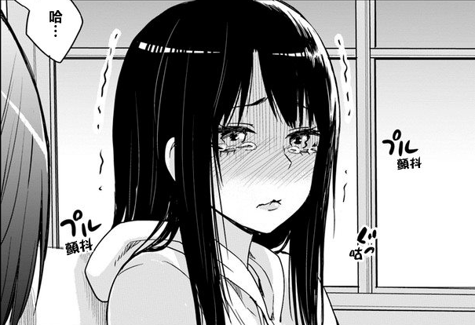

第四章 今天的见子也依旧可爱
“其实，看不见也是挺幸福的。”
独自坐在沙发上看着大和的奇葩综艺，四叶不由的发出感叹。
灵异节目正儿八经的放在电视台上放，也就是大和这个国家吧。
看得見的人怎麼都能看得見，为了节目效果而作假的灵异照片里真的有灵异存在，只不过普通人看不到而已，相比只有一只只是爱蹭镜头的灵，节目之后的广告时间才是最刺激的。
[亮泽因子，让你持续耀眼夺目……]
一个在一般人眼里普普通通的洗发水广告，在眼力好的人眼里，却能看到浓郁的几乎溢出来的诅咒。
[不可原谅！]
[还给我！]
[不可饶恕！]
[为什么会是你！]
[去死吧！]
[要是没有你的话！]
[……]
“好可怕好可怕……”
四叶有气无力的呻吟道。
被人诅咒的艺人呢，倒也不能因此就认定这个艺人有什么问题了。
这年头，这世道，人红是非多，谁也没办法讨好所有人，没有被人诅咒过的艺人才有问题呢。
“ 樱岛麻衣吗？这诅咒也就这个程度，放着不管也不要紧。”
说着，四叶关闭电视机，从沙发上站了起来，伸了个懒腰。
“姑且记下了，有空的话，去接个外快也不错，暂定五百万日元吧。”
四叶愉快的拍了拍手掌为自己预定好了下一个客户。
一个成熟的袍级，就是要学会自己开发客户，自己完成业务，最后自己去催款。
虽然公会的任务报酬很高，但是，钱总是不够用啊，而且，比起广大的世界，公会的人手真的不够用，没办法面面俱到，所以有时候还是需要各位袍级自行拓展业务。
“不过，姑且，先把这边的事情解决吧。”
瞄了眼时钟，约好的时间到了，差不多要出门和见子一起去逛街了，虽然没什么兴趣，但是姑且算是那孩子的保镖，比起屁股后面偷偷摸摸的暗中保护，一起活动会更便利一点。
“我出门了。”
“一路顺风。”
“姐姐药记得给我带蛋糕哦。”
“注意安全。”
相比孤零零的天宫家，见子出门的阵仗还真是大呢，爸爸妈妈弟弟都出来送了，任谁看了都会觉得是幸福的一家子呢，可惜……见子的父亲是一般人看不见的存在。
见子的父亲，在很久之前就已经过世了，在去年的秋天，不过，灵依旧驻留在家里，帮见子把浴室和卧室的灵赶走后，四叶倒是没有去驱逐见子的父亲，好歹是人家老爹不是吗。
“早上好，见子。”
四叶向见子挥了挥手打招呼。
“早上好，四叶。”
所以，以同样女性的身份，才最容易接近目标，要是男的的话，哪有那么容易那么快就到了互相直呼名字的程度。
[车辆启动，请站稳扶好]
如果可以的话，四叶希望能做私家车出门，但是无论见子还是他都只是学生，只能忍受公交车上的嘈杂环境。
“不可能的吧？”
“你觉得呢？”
“不会的吧？”
“呀哈哈哈哈哈……”
在车上有人忘我的与朋友高声的打着电话，忽视了周围人的感受，这点虽然让人反感，倒不是月姬不太想做公交车的原因。
“不可能的吧？”
“你觉得呢？”
“不会的吧？”
“呀哈哈哈哈哈……”
恶灵这东西，因为失去了脑子，被自身的瘴气以及城市的瘴气侵蚀，在各个角度上都表现的不正常，坐在四叶的背后，像是复读机一样的重复着车上说话最大声的那位姐姐的话。
看不见，听不见，很多时候，在各种方面，其实挺好的。
四叶瞄了眼身边的见子。
快哭出来了哟。
看著見子想哭又不敢哭的樣子，四葉稍微坏心眼的觉得，挺有趣的。
这种程度的恶灵，根本不会对人造成什么影响了，甚至，如果让小華去扇它一巴掌的话，这家伙大概会就地成佛。
“不可能的吧？真的假的？嗯嗯，啊哈哈……哈……抱歉抱歉，我先挂了。”
坐在车厢了一层的姐姐也注意到见子委屈巴巴的样子，以为是自己的问题，带着歉意的挂掉了手机。
“下一站……”
“到了哦，见子。”
车辆到站，但是见子却僵着身子一动也不敢动，这不由得让四叶暗暗的叹了口气，对于普通人来说，这果然还是太刺激了。
四叶站了起来，拉着少女柔软的手掌，很随意的将挡在过道上的恶灵挤开，就好像是那个灵自行让路一样自然，并没有让见子察觉，在下车后，四叶微微回过头用余光看了眼从车上下来跑马路对面瞎晃悠的扭曲恶灵，左手放在身后对着那东西射了一发灵弹。
从公交车上下来的见子确认灵并没有跟在自己背后，也无暇去确认恶灵去哪里了，像是回复了活力似得，匆匆忙忙的用力拉着四叶的手离开站台。
“真是的，走的那么急干什么。”
四叶像是什么也没有差距似得笑着询问到。
“小，小華应该快到了，我们要快点过去。”
见子是这样解释的，而小華……
[抱歉，我做错电车了，要晚点到。]
不愧是好姬友，如果没有自己在的话，见子估计也会因为那个恶灵的关系坐过站吧。
坐在奶茶店里，四叶含着吸管无趣的打量着四周来来往往的人群。
大都市对于灵而言，并不是什么友好的地方。
灵本就是无形的东西，容易被人的思念所影响，城市的灵，被数百万千万的普通人的欲望浸染，大都扭曲的不成样子，看多了影响胃口。
如果可以的话，还是乡下好一点，能看见更加更加淳朴的灵。
“见子，你喜欢那种类型的吗？”
四叶注意到见子的目光似乎被什么吸引了，顺着她的视线看过去，是一个……凭心而已，确实很帅气的的男生，是那些小女生会喜欢的类型。
“不，不是，怎么可能。”见子连忙收回目光低下头，握着奶茶杯看着桌面，似乎什么有什么有趣的东西似得。
这当然不是什么含羞的反应。
[爱你哦……]
[爱你哦……爱你哦……爱你哦……爱你哦……爱你哦……]
见子看的是缠在那个男生身上的灵，一个女性的灵。
恶灵？
不，还差一点，不过也快了。
不知道和谁打着让人腻歪的电话的男生注意到四叶的视线，挂了电话对着这边温和的笑了笑。
在这个男的看不见的地方，那个灵突然扭过头看向了四叶。
见子注意到四叶的视线看向的那个男的，不由的视线也跟着移动过去，那个男生也对着见子微微一笑，吓得见子差点捏爆手上的奶茶杯子。
【她在看着这边！】
见子完全不知道该怎么办好，这时候匆匆忙忙的收回视线的话，说不定会被那个灵发现自己能看见她，但是不转移视线的话……
笑——
【拜托，别这样啊，这样下去的话，就麻烦了！】
明明是相当温暖人心人见人爱容易引起别人好感的微笑，在见子眼中就好像恶魔的讪笑一般。
————————————————
【我又出現了！昨晚體驗了一下字幕組的工作，給一部漫畫嵌字，真麻煩，均速十分鐘一張圖，兩個半小時多了，才嵌字17張，哇……那些字幕組真的是辛苦，果然是用愛發電，聽說韓漫的翻譯組因為商業化運營是有錢拿的，日漫就是一群為愛發電的戰士，为了搞这个，输入法都改繁体了……其实，我更加想要参加《看得见的女孩》这部漫画的汉化工作呢，这是我的真爱】
【关于最近英雄学院的风波，其实我不太在乎他用了什么名字了，我觉得有人要diss我……
我更在意的是，爆豪的校园霸凌没有道歉，但是绿谷却爱的深沉，安德瓦的家庭暴力没有道歉，但是轰焦却似乎有原谅老爹的意思……这才是我最不能接受的地方，名字什么的，我不怎么在意了。
不过，昨晚，我发现爆豪的生日和希特勒的一样，其他人，好几个的生日，都和一些敏感人物的生日一样……我是一个很宽厚的人，我会思考人性的黑暗也会承认人性的光辉，我会把人往好的一面想，但即使是我，也没办法相信名字这件事，只是个偶然。
本来我不在意的，真不在意的了……
一、不能拿战争或是灾难的牺牲者开玩笑。
二、不能对某些特定的职业表现出轻蔑。
三、不能拿民族、国民或大众开玩笑。
這传说似乎是手塚治虫的觀點，我深以为然，以后我要将这个当做创作原则。同时，也希望看完的书的各位，如果有写小说的话，也谨记这点。
其实，好些小说里，经常炸日本炸美国的，这样不好，动不动就是日本人怎么样怎么样，美国人怎么样怎么样的，这样也不好，这和很多人搞地域其实也没区别，什么河南人怎么样怎么样，福建人怎么样怎么样，网上的智障，真的多】